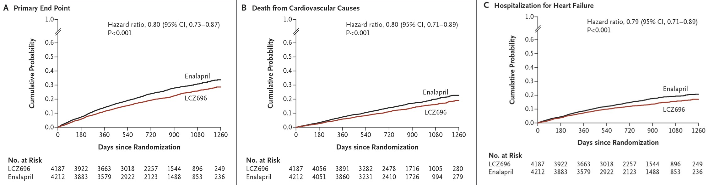
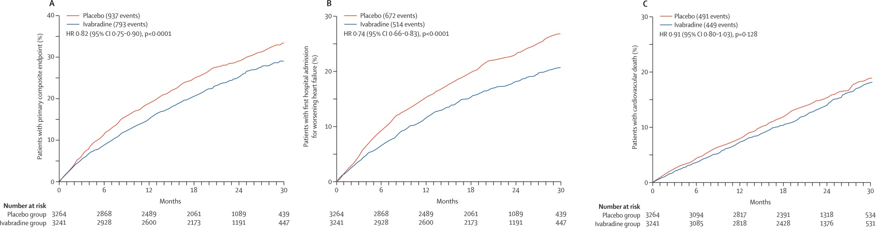

Guidelines >
> ACC & Nice


ACC and NICE published their new guidelines last year and this year respectively.
Minor dissimiarlities do occur, of course.
Guidelines >
> NT proBNP

NICE said... NT proBNP has a greater
sensitivity over a range of thresholds compared to BNP.
Also, NT proBNP has a longer stability in blood samples and is not interfered by Sacubitril Valsartan
compared to BNP. NICE, therefore, recommended NT proBNP over BNP as a diagnostic and prognostic marker
of heart failure. ACC, on the other hand, recommended either one.
Guidelines >
> Fundamental of HF Rx
- INFORMATION & SUPPORT
- SALT & FLUID CONSUMPTION
- ALCOHOL & SMOKING CESSATION
- TRAVELLING & DRIVING
- CONTRACEPTION
- VACCINATIONS
Guidelines >
> HFrEF

ACEI/ARB and Beta Blockers remain the first line treatment of HFrEF to reduce morbidity
and mortality.
Diuretic is recommended to relieve the symptoms of congestion and fluid retention.
Guidelines >
> HFrEF -- ARNI

In patients with HFrEF NYHA class II or III
who tolerate an ACEI or ARB, replacement by an ARNI is
recommended to further reduce morbidity and mortality.
In ARNI, an ARB is combined with an inhibitor of neprilysin, an enzyme that degrades
natriuretic peptides, bradykinin, adrenomedullin, and other vasoactive peptides.
Inhibition of neprilysin increases the levels of these substances, countering the neurohormonal overactivation that contributes to vasoconstriction, sodium retention, and maladaptive remodeling.
Inhibition of neprilysin increases the levels of these substances, countering the neurohormonal overactivation that contributes to vasoconstriction, sodium retention, and maladaptive remodeling.
Guidelines >
> HFrEF -- second-line

Recommendation for MRA and hydralazine/nitrates remained unchanged.
Guidelines >
> HFrEF -- Ivabradine

Recommended for the 1st time, as class IIa, in ACC.
Ivabradine can be beneficial to reduce HF hospitalization for patients
with stable chronic HFrEF who are receiving GDEM, including a beta blocker at maximum
tolerated dose, and who are in sinus rhythm with a heart rate of 70 bpm
or greater at rest.
NICE recommended Ivabradine since 2012.
NICE recommended Ivabradine since 2012.
Guidelines >
> HFrEF -- CIEDs

Nothing new. Just added the end-of-life care planning.
Before implantation,
explain the function of the device and the circumstances in which
deactivation might be offered, and
discuss the consequence of deactivation.
Provide the person and, if they wish, their family or carers with written information covering the information discussed.
Provide the person and, if they wish, their family or carers with written information covering the information discussed.
Guidelines >
> HFpEF -- TOPCAT


In addition to antihypertensives and diuretic, ACC recommended spironolactone
as a class IIb for patients with HFpEF.
"A positive re-look from a negative trial"
In TOPCAT trial, treatment with spironolactone in HFpEF did not significantly reduce primary outcome. A post-hoc analysis, however, showed significant regional variation and a greater benefits in patients from Americas than those from Russia and Georgia.
In TOPCAT trial, treatment with spironolactone in HFpEF did not significantly reduce primary outcome. A post-hoc analysis, however, showed significant regional variation and a greater benefits in patients from Americas than those from Russia and Georgia.
Guidelines >
> Summary
A "NICE" summary on management of chronic heart failure

Trials >
> CAMERA-MRI
A "NICE" summary on management of chronic heart failure